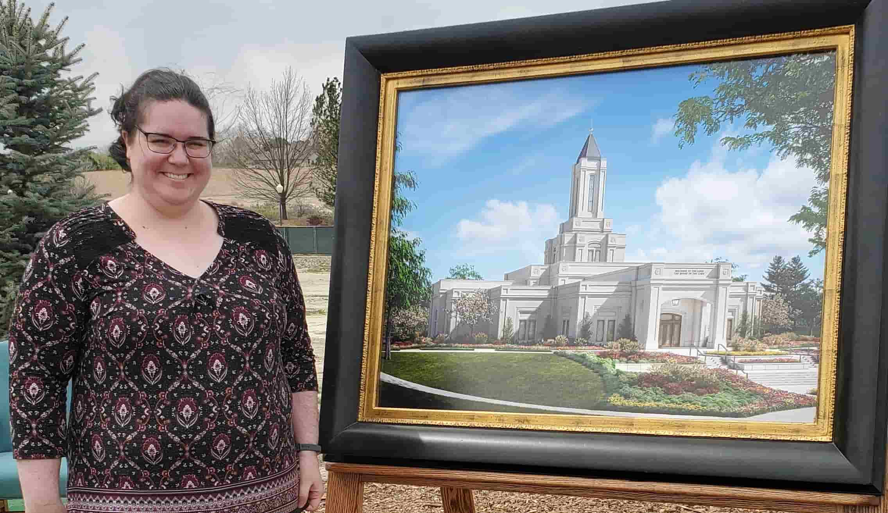

Pamela Lounsbury | WDD 130
Hello! I am Pamela Lounsbury. I live in Colorado and love the temple. I live with my sister and our two cats.
Hello! I am Pamela Lounsbury. I live in Colorado and love the temple. I live with my sister and our two cats.